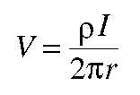
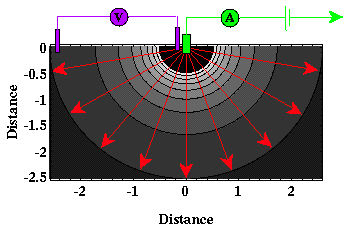

A First Estimate of Resistivity
The voltage change from a single current electrode to some point in the half space representing the earth is given by the expression to the right. In this expression, V is voltage, I is current, ρ is resistivity, and r is the distance between the current electrode and the point the voltage is measured. Notice that this expression is nothing more than Ohm's law with the resistance, R, equal to ρI over 2πr. 
If the Earth had a constant resistivity, which it doesn't, we could estimate this resistivity by performing the following experiment. Attach to a wire connecting the battery with one of the current electrodes an ammeter to measure the amount of current going into the earth. Place one electrode connected to a voltmeter next to the current electrode and place the other at some distance, r, away from the electrode and measure the voltage difference between the two locations. Using the expression given above, compute the resistivity, ρ.

In practice, this experiment could be difficult to implement because the two current electrodes must be placed a great (usually 10 times the distance over which the voltage is being measured) distance from one another. So, why not simply decrease the distance between the two voltage electrodes so the distance between the two current electrodes remains a practical distance? The problem is that the closer the two voltage electrodes are to each other, the smaller the voltage difference that must be measured. Thus, there is a practical limit to how close the two voltage electrodes can be and thereby how close the two current electrodes can be.
As another note, one may ask why don't we simply attach the voltmeter to the wire in which the current is flowing and measure the voltage drop between the two current electrodes. In principle, this could be done. In practice, however, it is difficult to obtain reliable information because what you measure is more a function of the contact resistance between the earth and the current electrodes than of the resistivity of the Earth. The contact resistance is the resistance that is encountered by current flow because the electrode does not make perfect electrical contact with the earth. Contact resistances can be quite large, on the order of kilo-ohms (10^3 ohms). If a large (infinite) impedance voltmeter is used, however, to make the voltage measurement across two separate voltage electrodes, little current actually flows through the voltage electrodes and contact resistance is unimportant to the measurement.
Resistivity
- Current Flow and Ohm's Law pg 4
- The Fund. Electrical Property is Resistivity, NOT Resistance pg 5
- Resistivities for Common Earth Materialspg 6
- Current Density and Electric Fieldpg 7
- A First Estimate of Resistivitypg 8
- Current Flow From Two Closely Spaced Electrodespg 9
- A Practical Way of Measuring Resistivity pg 10
- Sources of Noise pg 11
- Depth of Current Penetration V.S. Current ElectrodeSpacing pg 12
- Current Flow in Layered Media pg 13
- Variation in Apparent Resistivity: Layered Versus Homogeneous Media pg 14
- Current Flow in Layered Media Versus Electrode Spacing pg 15
- A Second Example of Current Flow in Layered Mediapg 16